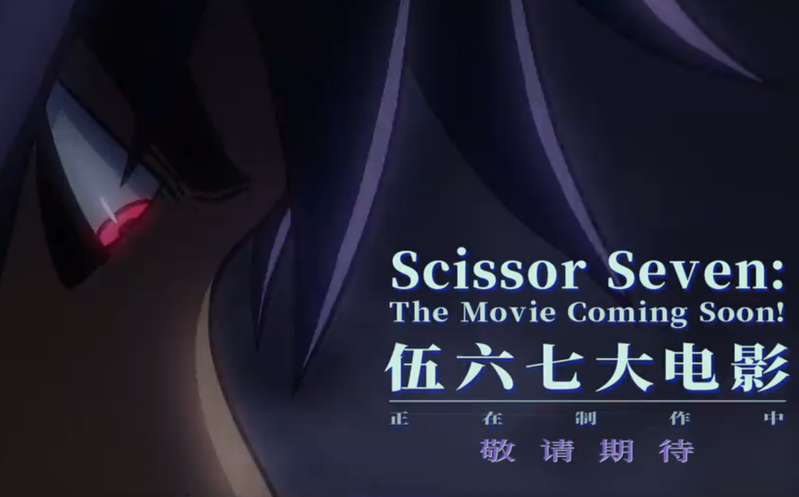

Si bien, aunque ha habido muchos rumores sobre la película, lo poco si no es que lo único que tenemos de información sobre ella es esta escena al final de la 4.ª temporada donde nos mencionan que la película ya viene, así que lo más seguro es que todavía esté siendo rodada por lo pronto los mantendremos informados cada que haya nueva información.
